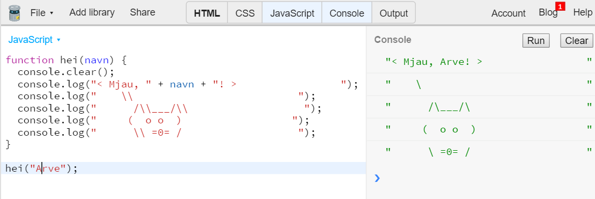
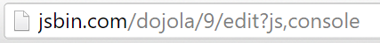
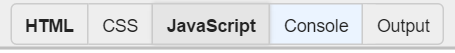
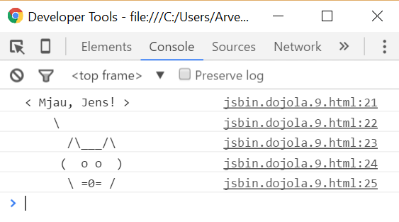

I denne oppgaven blir du introdusert for programmeringsspråket JavaScript. Du
skal gjøre den klassiske oppgaven Hei verden, med en katt.

Steg 1: Bruke JS Bin
Du skal bruke en nettside som heter JS Bin for denne oppgaven. JS Bin er en
nettside som lar deg programmere JavaScript. Vi kunne også brukt nettleseren
din direkte, men i JS Bin blir stegene lik for alle, uansett om du bruker
Internet Explorer, Mozilla Firefox, Chrome, Opera, Safari eller en annen
nettleser. I tillegg er det med JS Bin mulig å gjøre denne oppgaven på
nettbrett.
Legg merke til at du får to faner; JavaScript og Console.
Koden skrives i JavaScript.
Og i Console vises tekstbeskjeder som blir skrevet ut.
Skriv inn denne koden i fanen JavaScript:
console.log("hei verden");
Trykk Ctrl + Enter (eller bruk knappen ) og se hva som skjer
i Console.
Kan du endre koden til å skrive ditt navn?
Forklaring
Her er en forklaring til koden over:
console.log() betyr at vi ønsker å kjøre kommandoen med navnet console.log.
.log er en av flere utskriftsmetoder. Prøv console.error, ser du hva
forskjellen til console.log er?
Tekst skrives mellom ", slik som "hei verden".
; betyr at kodesetningen er ferdig.
Steg 2: Lage en funksjon
En funksjon er nesten som en oppskrift. Funksjoner brukes når man ønsker å
gjenbruke kode flere ganger eller bryte opp et problem til mindre biter. En
funksjon kan både ta i mot og returnere data. Din funksjon skal hete hei,
ta i mot et navn og skrive navnet til konsollen.
Sjekkliste
Slett koden din fra steg 1.
Skriv inn denne koden:
functionhei(navn) {
console.log(navn);
}
function hei betyr at funksjonen skal hete hei.
(navn) betyr at vi kan sende inn data til funksjonen.
{ markerer starten til funksjonen.
} markerer slutten til funksjonen.
Mellom { og } er det som funksjonen skal gjøre.
Akkurat nå gjør ikke funksjonen så mye, men la oss teste den ut. Skriv dette
etter funksjonen:
hei("Emma");
hei("Jens");
hei("Emma") betyr at vi skal kjøre funksjonen og sende inn "Emma".
Trykk Ctrl + Enter for å kjøre koden.
Ser du både "Emma" og "Jens" i konsollen?
Tips
Du kan slette historien i Console ved å trykke på knappen , eller legge inn console.clear();
i koden din.
Steg 3: Hei navn!
I steg 2 gjorde vi ikke noe annet enn det som console.log gjør. Nå skal du få
hei("Emma") til å skrive ut "Hei Emma!".
Sjekkliste
I JavaScript kan vi legge sammen tekst med +.
Endre hei:
functionhei(navn) {
console.log("Hei " + navn + "!");
}
Her har vi lagt sammen "Hei ", navnet som sendes inn og "!".
Kjør koden din.
Står det "Hei Emma!" og "Hei Jens!" i Console?
Kan du endre koden slik at den skriver ut navnet ditt?
Steg 4: Katten sier hei
I dette siste steget skal du lage en katt som sier hei.
Sjekkliste
Bytt ut function hei ved å kopiere koden under:
functionhei(navn) {
console.log("< Mjau, " + navn + "! > ");
console.log(" \\ ");
console.log(" /\\___/\\ ");
console.log(" ( o o ) ");
console.log(" \\ =0= / ");
}
Kjør hei med ditt eget navn.
Er det en katt som sier mjau til deg i konsollen?
Klarer du lage en hund eller et annet dyr?
Bakoverstrek
\ brukes til spesielle bokstaver. \n for eksempel betyr ny linje. Derfor
må du skrive \\ dersom du ønsker en vanlig bakoverstrek.
Steg 5: Dele prosjektet
Kanskje hadde det vært kult å sende en kattehilsen til noen av dine beste
venner? La oss lage en personlig hilsen til hver av de.
Sjekkliste
Sørg for at du kjører hei med navnet til din venn:
hei("Navnet til din venn");
Hold inne Ctrl + s for å lagre.
Legg merke til at du nå fikk et tall i adressen. Tallet er versjonen til
programmet ditt.
Versjon 9: 
Hver gang du endrer programmet og trykker Ctrl + s
får programmet en ny versjon. Slik kan du lagre flere varianter av samme
program, med forskjellige navn.
Trykk på JavaScript slik at kodefanen skjules:

Trykk på og sjekk at det ser riktig ut.
Kopier nettaddressen og del med vennen din!
Gjenta stegene for flere av vennene dine.
Hvis du senere ønsker å åpne prosjektet, kan du ta vare på en av lenkene du
sendte til vennene dine.
Steg 6: Lagre prosjektet på datamaskinen din
Det er også mulig å laste ned prosjektet og lagre det på datamaskinen. La oss gjøre det.
Sjekkliste
Trykk på File > Download.
En .html-fil lastes ned.
Når filen er lastet ned, åpne filen.
Du får et tomt vindu opp, utskriften av katten blir sendt til konsoll. La oss åpne konsollen i din nettleser.
Chrome og Firefox: Trykk på knappen F12. Velg Console.
Internet Explorer og Microsoft Edge: Trykk på knappen F12. Velg Konsoll.
I konsollen skal du se katten mjaue til deg.

Hvis du ikke ser katten, gjør neste steg.
Skriv inn hei("Ditt navn"); og trykk Enter.
Hva skjer?
Hei der!
Ser ut som dette er ditt første besøk, vil du ha en omvisning?